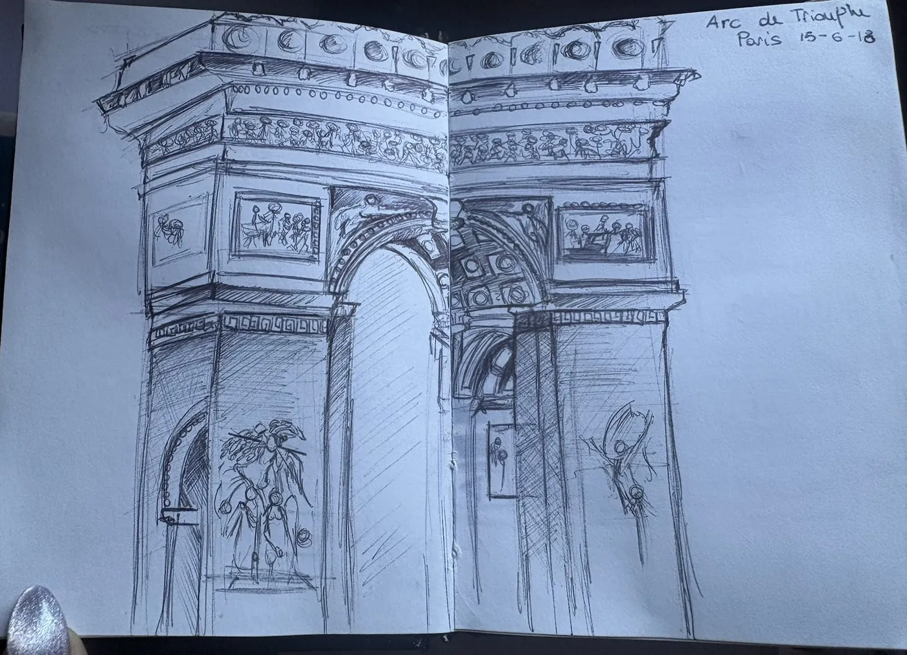
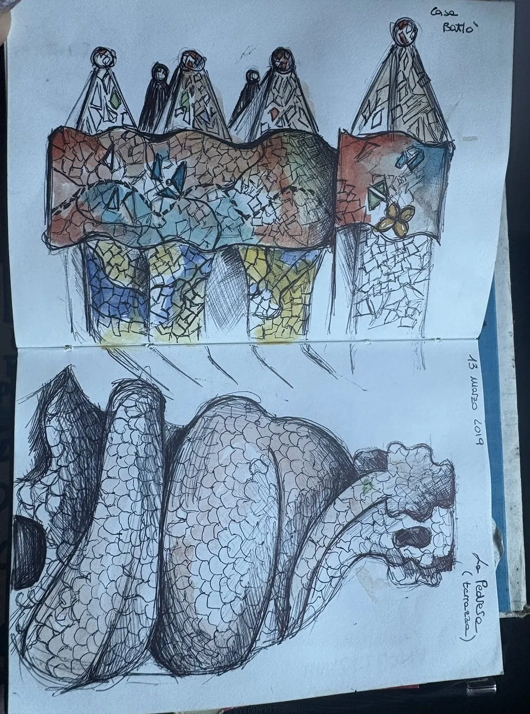

Ciao, sono
Virginia
Dalla pittura alla grafica. Una mente creativa e ibrida: leggo le esigenze reali di un brand e ci aggiungo valore. La mia regola: think big.
Il mio percorso
Scorri in basso: il percorso si accende passo dopo passo.
Dal mio sketchbook
Sposta i fogli, clicca per vederli grandi.


Cosa posso fare per te
Brand identity e loghi
Marchi e immagini coordinate per aziende e piccole attività.
Packaging
Dal concept alla messa in stampa, con lo shooting di prodotto.
Social media
Piani editoriali, grafiche e testi che fanno riconoscere un brand.
Video
Montaggio e motion per campagne, clienti e social.
Eventi
Dal nome al palco: identità, spazi, programma e comunicazione.
Stampa e web
Cataloghi, leaflet, pannelli espositivi e siti WordPress.
I miei strumenti
Adobe
+ XD
Inoltre
 WordPress
WordPress
Canva · CapCut · AI generativa
Digital
Social media management · content writing · SEO
Trasversali
Gestione clienti · coordinamento team · preventivi e scadenze
Fuori dal lavoro
Cinema · mostre · viaggi · sketchbook
Lingue
Hai un brief? Si può fare.